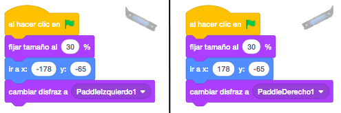
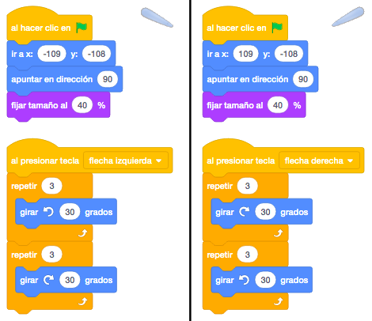
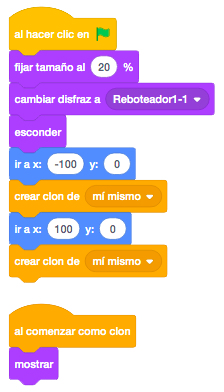
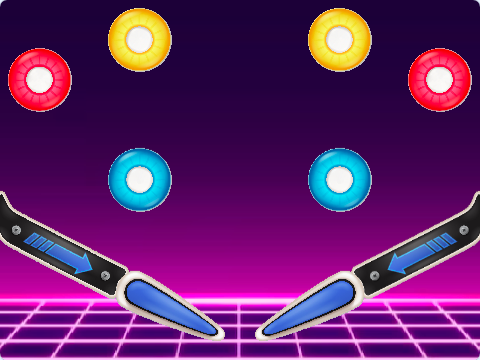

Para este juego vamos a necesitar los reboteadores laterales y los centrales, que utilizaremos de tres
colores distintos para hacerlo más vistoso.
También pondremos los dos flippers que moveremos con los cursores derecha e izquierda.
En lugar de tener una bola tendremos tres, con las que jugaremos con ellas simultáneamente.
Otros objetos que vamos a utilizar son un botón de "Start", un indicador de si tenemos la música sonando o no,
un objeto con el texto "Game Over", una linea para la parte inferior y una imagen con movimiento para
mostrar el record.
Añadiremos el escenario incluid, pero podemos poner el fondo que más nos guste, siempre y cuando se vean bien los accesorios.
Para descargar los objetos necesarios para el juego, lo haremos desde este link. Es un archivo comprimido con 15 objetos y 1 escenario. Lo descargaremos y lo descomprimimos en el directorio del alumno.
El juego consiste en el clásico Pinball. Tenemos que mantener la bola en el juego el mayor tiempo posible,
haciendo puntos con los reboteadores. Los reboteadores irán cambiando de color cuando la bola rebote en ellos.
Podremos quitar y poner el sonido del juego y jugaremos con tres bolas al mismo tiempo.
También tendremos una lista de jugadores con el record de cada uno.
Empezaremos por los reboteadores laterales (paddel) donde fijaremos el tamaño al 30%, los colocaremos en la
parte inferior de la pantalla y le pondremos el primer disfraz.

Ahora pondremos los flippers, que colocaremos al final de cada paddel, y poniendoles con un tamaño del 40%.
Cuando pulsemos el cursor derecjo o el izquierdo, moveremos hacia arriba y hacia abajo cada uno de ellos.

Colocaremos a continuación los reboteadores del centro del pimbal. Serán de tres colores distintos y haremos
dos clones de cada uno.
Primero le pondremos un tamaño del 20%, pondremos el primer disfráz y como siempre que creamos clones, lo
esconderemos.
Lo colocaremos en su posición en un lado de la pantalla y crearemos un clon, lo volveremos a poner en el
otro lado de la pantalla, simétricamente y crearemos otro clon.

Haremos lo mismo con los otros dos reboteadores, quedando la pantalla de esta forma:

En el Escenario inicializamos Puntos, Pelotas, Highscore y Puntos Jugador. También tendremos un "al recibir inicio" para que este el Sonido Juego sonando continuamente. También tendra otros dos "al recibir Parar sonido/Poner sonido" al igual que en todos los objetos que tengan sonido para poder bajar o subir el volumen cuando hagamos un click al objeto "Sonido".
En los Objetos Paddle Derecha/Izquierda lo primero que haremos será posicionar los objetos y poner el disfraz verde en cada uno de ellos. También tendrán un "al recibir Disfraz Paddle Derecha/Izquierda" para que cuando la pelota toque a estos objetos cambien el disfraz y luego vuelvan a su disfraz inicial.
Las Paletas Derecha/Izquierda se posicionarán en su sitio. Pero cuidado porque tendremos que moverlas una con la flecha derecha y la otra con la flecha izquierda pero tendremos que poner su centro en un extremo ya que tendremos que hacer un giro hacia derecha y otro de vuelta hacia la izquierda.
Tendremos 1 Sprite para la pelota pero la duplicaremos para poder hacer 3 Objetos pelotas.
En la Pelota1 al comienzo del juego inicializamos variables: Minimo a -45, Maximo a 45, Pasos a 25, Batida a 2.
Tendrá "al recibir Game Over" para esconder la pelota cuando termine el juego.
"al recibir inicio" para que comience el juego. Inicializar variables: Pelota1 a S (para que sepamos que se ha lanzado la pelota1),
Pelota2 y Pelota3 a N.
Cambiaremos el disfraz de la pelota aleatoriamente. Cambiamos tamaño, posicionamos y apuntamos hacia 180 pero sumandole un numero aleatorio.
Y le aumentamos el volumen del sonido.
Haremos el movimiento de la pelota moviendo pasos y rebotando si toca un borde.
Haremos un "enviar Rebotar" y este enviar sonará un "pop", girara 180 grados para que se de la vuelta para que este en la dirección contraria
a la que se dirigia y le sumamos el aleatorio en el Minimo y Maximo. Y moveramos "Pasos" por si acaso para que no toque de nuevo el Boton.
Si toca Paddle Derecha/Izquierda llamara al enviar Paddle Derecha/Izquierda.
Si toca la Paleta Derecha/Izquierda haremos practicamente lo mismo pero moveremos los "Pasos * Batida". Ya que las Paletas tiene el movimiento
de giro.
Si toca la Linea de tierra sonara el sonido de "Quitar Vida", le resta a la variable Pelota 1 y hara un "enviar Linea de Tierra" para que
cambie de disfraz. Si sigo teniendo pelotas para poder lanzar modificamos los valores de Pelota1 a N y Pelota2 a S y asi podremos dar
a la tecla "Espacio" paa poder lanzar la Pelota2. Y detenemos este programa para que deje de moverse la Pelota1.
Si los Puntos es mayor que 5 y Pelota1 es igual a S aparecera la Pelota2. Ponemos la variable Pelota1 a N y Pelota2 a S.
Tendremos también otro "al recibir inicio" paa que este comprobando continuamente si tengo Pelotas. Si ya no tengo Pelotas haremos "al enviar Game Over" y detendriamos el juego.
La Pelota2 y la Pelota3 será muy parecida.
La Pelota2 tendra un "al presionar tecla espacio". Comprobaremos si Pelota2 es igual a S y Puntos es menor a 6 y cambiamos la variable Pelota2 a N.
Y hacemos un "enviar Mostrar pelota2", esperamos un poco y modificamos variable Pelota3 a S ya que la Pelota3 también la podremos llamara con el espacio.
Haremos lo mismo que la Pelota1 pero no comprobaremos al tocar Linea de tierra Pelotas mayor que 0. Los Puntos pondremos mayor que 10 y Pelota2
es igual a S. Y no tendremos el bloque de Pelotas igual a 0, solo estara está opción en Pelota1.
La Pelota3 tendrá un "al presionar tecla espacio". Comprobaremos si Pelota2 es igual a N y Pelota3 es igual a S y Puntos es igual a 6
y cambiamos la variable Pelota2 y Pelota3 a N. Y hacemos un "enviar Mostrar pelota3",
Haremos lo mismo que la Pelota1 pero no comprobaremos al tocar Linea de tierra le quitamos vida a Pelotas y detenemos el programa.
El Botón serán 6 clones (se podrián hacer niveles creando más o menos clones para ir dando más dificultad al juego).
Al comenzar como clon y si tocamos las Pelotas1,2 ó 3 llamaremos a cada Rebotar1/2/3. Y cambiara disfraz epera un poco y lo
dejamos como al principio.
El Objeto Sonido será para bajar o subir los sonidos del juego.
El Objeto Record tendremos un "al recibir Game Over" y comprobare¡mos si nuestro jugador ha superado su record para poder guardarlo en la lista y que cuando empiece el juego lo podamos mostrar en el escenario. Pondremos una texto y un cambio de disfraz con un "repetir". Haremos que tenga un sonido. Y llamaremos a un "enviar Fin" para que se muestre un Objeto de "Game Over".
Nos faltaria el Objeto de Start para que nos pida el nombre de usuario y si no esta en la lista Record Name/Puntos nos lo añada.
Esto lo haremos en el Escenario "al recibir Nombre Jugador". Hasta que no nos meta un nombre no nos dejara continuar el juego.
Buscamos el nombre y si no está lo añadiremos a la lista.
Y el juego quedaría así.

Para descargarte el juego terminado pulsa aquí.